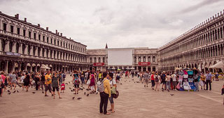

St. Peter's Square
Pisa Cathedral
Rialto Bridge

St. Mark's Square
This famous square is populated with flocks of tourists and pigeons.
Visit Italy
Camposanto
Prato della Valle

Castelvecchio Bridge
This red-brick bridge was originally built in the 1350s and was reconstructed in 1950.
Verona
Venice
Palatine Hill, Rome
Part of the historical Roman Forum site, the Palatine Hill contains the remains of imperial palaces.